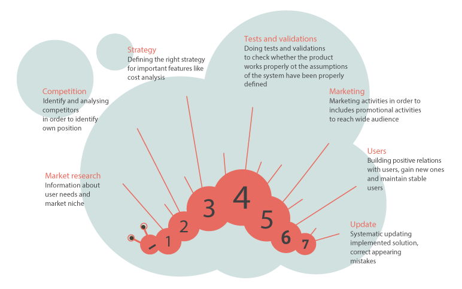
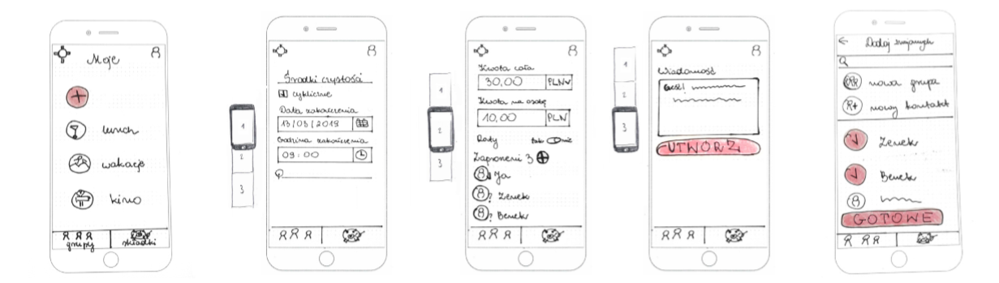

Hello, I am Martyna UX / UI designer
I'm just a problem solver who cares about crafting products and experiences that are useful, useable, and beautiful. Involved in each phase of the design process from discovery, requirements analysis, visual design strategy & ideation, feature specification, user flows, implementation to user testing and realize. I am also interested in design from the "code" side. As you can see this portfolio I made myself in HTML/CSS.
About the project
Observing everyday life I noticed problem related with settling costs
among groups of people.
My project faces the problem of organizing group finances for various goals.
Group expenses can be very different - smaller like a gift, bill in a restaurant,
and larger like a holiday. In a larger group, settlements get complicated, take a lot of time and often
someone forgets to give away their part of the money.
Generation Y often organizes expenses with friends. When people organizing events, one of the most
difficult issues to be negotiated is finances. I would like to
support and help people to organize group financial goals.
I divided my project into four sections: Research, Business,
Modeling and Tests. Phase called
Research consists analysis and conclusions from qualitative research. I conducted
interviews with 10 millennials.
Business is about strategy and development my product on the
market.
The phase Modeling is necessary for me to show you wireflows, user
scenarios etc.
And the last phase Test consists information about usability
tests,
conclusions and prototype.
Introduction
For millennials, contacts with friends are often as important as
family relationships. In the face of eternal racing and lack of time; We can e-mail, chat and
send messages at any time of the day or night.
I decided to check how representatives of Generation Y spend time in groups.
Research
Subject and objectives of the study
My main purpose of the research was explore how people organize common acvtivities and their costs.
What I wanted to know?
- In which groups do the millennials function and what they usually do together?
- What are the common financial goals associated with their group activities?
- What are their individual financial habits?
- What are the problems and needs of group expenses?
Requirements for candidates
- Use at least 2 electronic devices
- Use digital financial tools
- Be a supporter of group initiatives
- Organize group expenses
- Be a supporter of sharing costs
I have been researching 10 representatives of Generation Y in age 23-37
Research tools which I used
- IDI interview with observation elements
- Card sorting
- Collage photos
Activities of respondents
I explored what kind of groups millennials function:
- family
- friends
- flat (roomates)
- work (friends from work)
- sport (friends from yoga, gym)
- church
- parties (friends organize common parties)
- trips (friends organize common trips)
Their ways of spending free time:
- at dinner
- in the evening meetings
- at birthdays parties
- playing games together
- at the cinema
- in the restaurants
- at holidays and trips
Activities
- For the respondents, relationships with people are very important
- Respondents identify with groups that are significant to them
- With these groups, they want to maintain regular contact
- They use phone (conversation and text messages) or Facebook, WhatsApp, Messenger
Types of expenses
According to research, people spend money on large and small goals. The large like for instance holiday, trips, renovations but rare ones. What is more small like shopping, dinner, gift etc. but more frequent.
Common financial goals
When respondents organize common expenses often do it in a certain way:
- An idea or need
- Someone comes out with the initiative of acting
- The organizer creates an event on Facebook and invites other people
- Participants share tasks
- Someone lays money or collects money from friends
Common financial goals-conclusions
- Settling common expenses can be complicated and requires a person who will take care of everything
- When people organize common expenses they use tools like paper and pen, calculator, Excel
- One person creates an event on Facebook and invites other people
- Remain people about money is awkward and causes discomfort.Respondents try to avoid such situations and sometimes ignore it
- During trips to the restaurant, they often take one bill
Individual financial habits
- Millennials are satisfied with online payment methods, they use them all the time
- Despite the regular use of mobile applications on the smartphone, some respondents have concerns about using the banking application, some of them do transfers only through the website
- They save money because they want to feel safe
- Saving rather does not cause negative emotions
- People are aware that saving is important
- They are in constant contact with their parents, and sometimes use their financial support
Problems, needs and expectations
Millennials formulated their needs around four areas: management, processes, information and rules in the group.
Management
Planning
They like settings goals and the organization, they does not like rigor
Searching for optimization
They are open to analize their financial situation
Stable income
They consider that irregular incomes disorganize their life
Perseverance
They know that during savings the most important is regularity and consequence
Personalization
They appreciate tools adapted to their needs
Processes
Control
They want to control unpredictable expenses
Security
They want to feel safe in network, they safe money in order to protect their future
Speed
They emphasize the convenience gives automation; simplicity and transparency acelerate processes, at the same time favors ill-considered spending money, so that fact people are ready to accept method of obstruction in chossing savings
Transparency
They want to know how much and what they spend money
Rules in the group
Ethics
People like clear rules, honesty, punctuality
Good communication
They say that digital exclusion make communication difficult in the group, because of information chaos, they prefer organize in small group
Discretion
Asking for money is a little bit confusion for them, people feel uncomfortable when expenses unexpectedly growth
Teamwork
They appreciate others needs and they want cooperate in groups
Division of responsibility
They share roles, they are willing to get involved in common activities
Information
Education
They know something about savings but they are willing to get more knowledge about it
Advices
They appreciate others recommendations and they are open for knowledge from other people
My solution is dedicated to customer segments:
- People born in the 1980s, who remain in marriages or partnerships. They have children, began their first job at least about 6 years ago. They organize events and common expenses in groups
- People born in the 90s, who are singles. They like organize events with groups of friends. They began first job about 1-2 years ago
Personas
Based on the interviews I set up two personas. I referred to them throughout the entire product process. The personas include information about the most frequent expenses, friends with permanent contact, used technologies. What is more the section bio, frustrations, fears, goals and needs.
Persona - Basia
Bio
Basia is 36 years old. She is a Polish translator, married, mom of two children, living in Katowice. Basia has own business, thanks to this she combines work with looking after children. She is constantly busy, she has no time. Basia has a non-standard job, but her husband has a good job and a regular income. Although they have a shared budget, everyone has their own account. They live rather sparingly, they pay off their loan for an apartment. Once a year, they try to go on holiday. As a student she liked spending time with friends. Her main work tool is a computer. She approaches new technologies on the market with distance. Although she makes mobile payments, she afraids of paying through applications. For security reasons, she prefers paying via websites. Her most common cotributions: holiday, school, gift. Used technologies: smartfon, tablet, laptop. 10 people in pernament contact.
Frustrations and fears
- Lack of time
- Limited social life
- Inefficient budget management
- Problems with organizing time with friends
- Collections at school and kindergarten
- Saving for holiday
- 2 separate accounts with her husband
Goals and needs
- Financial stabilization
- Quick repayment of the loan
- More free time
- Planning time with friends in more effective way
- Spend more time with friends
- Rest
- Travel
Persona - Kewin
Bio
Kewin is 25 years old. He graduated studies in economics, he became independent and started his career. He works full time as a junior business analyst in a large international company. Despite his regular income, he rents a flat with friends for savings. At work, he regularly uses tools to contact clients and colleagues. He often exchanges his electronic equipment. He uses new technologies for payment. He spends his free time with friends. He often walks to the mountains, because he loves climbing since childhood. His most common cotributions: lunch, flat, holiday, party. Used technologies: smartwatch, tablet, laptop, console, smartfon. 18 people in pernament contact.
Frustrations and fears
- Remind of returning costs related with flat, bills
- Friends rarely engage in the organization of common time
- Fear of postpone financial plans
Goals and needs
- Organize a trip to Alps with friends
- Improve the organization time with friends
- Save more money on new car
- Take a loan for new flat in the future
Business
Customer journey & experience map
Poeple who I researched organize common events and expenses according to a similar pattern. During the whole journey, by searching for information and communicating with other participants, they use a smartphone and computer. According to their needs and expectations I formulated:
- possibility of making payments (from a common money box)
- notifications, alerts (about event, settlements)
- suggestions and personalized advertising

Market entry
I analyzed different ways in order to effectively enter to the market
Sources of income
Advertising
Partner ads appearing on selected application screens
Suggestions
Suggestions to keep money in the application. After finished event the app calculates what you can buy for it. For example you can buy something or transfer money to the next event
Commissions
Commissions from shops, services, reservations. The iCollect app take a commission when user is redirect to the site the service provider. For instance user clicked on the product that interested him, which redirected him to the store website.
Product promotion
Social media
Profiles on Facebook and Instagram
E-mail marketing
Newsletters, information and promotional e-mails
Positioning page
Improve the visibility product in the search result
Advertising
Google AdWords, Facebook App Ads, Advertise TrueView In-Stream
Ratings and reviews
Encourage users to post ratings and opinions
Blogs
Get to the Internet sites that can describe product
Advertising campaign
Outdoor, indoor, ambient advertising
Recommendations
Offering benefits, additional advantages in exchabge for product recommendation
Competitions and events
Particapation in dedicated events and competitionsin order to generate more interest in the product and get potential sponsors
Partners
Success rates (KPI)
Movements in piggybank
The number of transfers from app piggybank for events described in the title of transfer as entry fee, reservations payment or account numbers of institutions, hotels, etc. will show finalized events
Commissions for brokerage
Commission from application for transactions, where redirecting to the online stores, hotels, restaurants etc.
Finalized registrations
Number of finalized registrations show how many users are seriously interested in using application
Interrupted actions
The number of interrupted "events" (indicating the stage),number of interrupted registrations (with indication of the stage) will show problematic application points
Frequency of use
This indicator will help determine how often the application is needed for regular users
Outgoing users
Number of users leaving or not using application in comparison with the number of new arrivals users helps control interesting and satisfaction target group
Frequency of non-response from application
The indicator will show the number of sessions and gestures made by user which have no response in app
Effective notifications
Number of users react on notifications send by iCollect app
Finalized events
The number of "events" completed to the last step will show how many people use app at least once
Value proposition
- fast and efficient group settlements
- fast and cashless collection of money for various purposes
- secure payments
- timely payments by the participants of the event
- saving time and stress while organizing expenses
- improving the quality of time spending together
- simple and efficient organization of group events
The Business Model Canvas
Modeling
User scenario
I designed User scenario from perspective person who organize group`s expenses and person who takes part in event as participant. In my case persona-1 called Basia is an organizer and Kewin is a member.
Onboarding - Basia installs iCollect app and creates an account
Basia is 36 years old and she is English translator. As a young mother she decided to work from home in order to divide time between work and family responsibilities. She is constantly busy and tired. She misses spending time with friends. On Sunday evening Basia remembers that with friends decided to drop off for a birthday present for their friend named Benek. She heard about the iCollect application. It`s app for organize group`s contributions and expenses. She downloads application on the phone and turn on. Basia creates an account after reading short information how app works. Basia follows the instructions that help her create the first contribution. She defines the purpose and duration her contribution. Then she sets the amount of payments and selects friends. At the end Basia writes a short message and invites selected friends. Basia finally created contribution. She decides to pay for yoursel immediately. It turns out that for this purpose she have to complete the payment details. She adds card details. Then she authorizes the payment. The contribution is ready. Money has been paid to the "piggy bank". Basia can manage contribution among her participants.
Basia organizes contribution
Basia is 36 years old and she has two children. To avoid losing contacts once a quarter she tries to meet friends. Thanks to these meetings she has not gone crazy because of too much duties. In a month there is another opportunity to meet with friends. Because of birthday party her colleague Benek. It will be be good party in a large group. Basia thinks it could be nice this year to buy a big present for Benek. It's best to start thinking about it now because time flies. It is Thursday evening. Basia decides to take care of the money contribution for a birthday gift for Benek. She opens the iCollect app and creates a new contribution. She writes name of contribution, amount per person, sets the end date chooses participants. She writes a short message: "Hey! I'm organizing a birthday present for Benek, do you want to join? "She sends it to firends and pays for herself. It is Friday afternoon Basia is in the shop and takes a look for app. Seven (out of 10) people accepted the invitation. Some people paid money. Basia is at home, she checks the phone again. Franek rejected the invitation. So the amount for the gift will be reduced. Two weeks gone, soon will be the end of the contribution. But Ania has still not paid. Basia knows that the app sent Ania a reminder, but she did not react. Basia decides to give Anna the last chance and extends the contribution for another three days. Three days later she still do not see payment from Ania. The application announces the end of contribution. In the "money box" is less money than Basia provided. The money is already in the application
Basia disburses money collected during the contribution
Basia is a 36-year-old, English translator and mother of 2 children. Thanks to the iCollect application she collected money for gif for friend named Benek. She collected 100 PLN and with friends Basia will buy dressing-gown. Basia as an organizer is authorized by other participants to buy a gift. She found the right product in the online store, she buys it and choose BLIK payment. Then she opens the iCollect application and selects the recently completed contribution. She uses the possibility of paying the money collected in contrubution earlier. She decides on a direct transaction with the application using BLIK. She uses the BLIK code displayed in the application on shop website. She authorizes BLIK transaction the previously defined PIN number in app (alternatively: biometric data by scanning the thumb). Finally she bought a gift for Benek.
Kewin participates in the contribution
Kevin is a 25 years old business analyst. Most of the day he spend in the office, where he spends a lot of time after officialy hours. Kewin with a group of friends often divide common costs: joint events, lunches or gifts. Kevin is a 25 years old business analyst. Most of the day he spend in the office, where he spends a lot of time after officialy hours. Kewin with a group of friends often divide common costs: joint events, lunches or gifts. It is afternoon, Kewin returns home from work and receives a message from his friend Basia. The message relates the birthday gift their friend Benek. Basia informs him that she sent invitation to join in the iCollect app. Thanks to this they will collect money for gift. Kewin receives a message with information about the amount of the contribution and a link to the application. He downloads the application and launches it. After seeing basic function Kewin skips the tutorial. Then he creates an account in the app and configures the card payment. Kevin accepts contribution where he have to pay 25 PLN. He sees the details and the pays money. After the payment authorization Kewin received information that money is in app account. He is will be happy to use the app again for lunch contribution in his work.
Wireflows
During my design process I created a lot of wireflows on paper. Here you are a few of them

User story mapping
Usability tests
The purpose of tests
- checking the intuitiveness of the application interface
- verification of the efficiency and fluency of performing key tasks
- the discovery of repeated application errors
Subject of tests
A clickable prototype for smartphones with Android system (prepared in Axure)
Recruitment
- recruitment using the snowball method
- screener carried out by phone or e-mail
Recruitment criteria
- using a smartphone (Android system), a mobile banking application and mobile payments;
- participation in group contributions for birthdays or parties; in particular persons taking over the roles of organizers
Test methods
- Task-oriented usability tests:
- 6 tasks
- Test time about 45-60 minutes
- Meeting in test houses or public spaces
Conclusions from tests
- During testing, I observed anxiety and uncertainty on the part of users in relation to a new application that asks you to provide your credit card number or provide other data; this behavior of the testers convinced me that the iCollect application should give the user a sense of security from the beginning, visually accentuate that the user can trust her, do not have to worry about depositing her funds into the piggy bank or entering data
- Still, a little trust in applications related to payments and the provision of some data among Polish millennials may be a barrier to using the iCollect application, so maybe an interesting solution for the project would be to be part of a banking application or an additional component of such application
- The iCollect application, based on the PSD2 directive, enables users to keep money in premiums in the application; Because it has been implemented in Poland for several months, I think it would be a good idea to explain to users the mechanism in a short and accessible way
iCollect App
Here is the link to the hi-fi mockup's Project on Behance
Here is the link to my app prototype prepared in Axure Axure Link